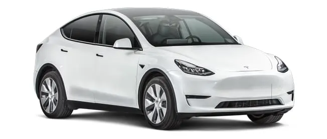
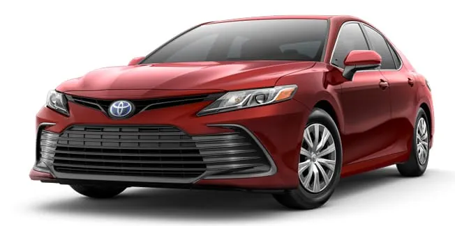
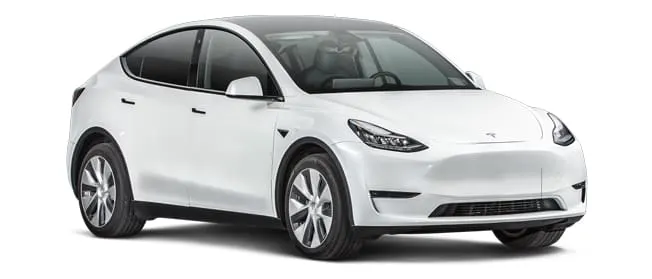
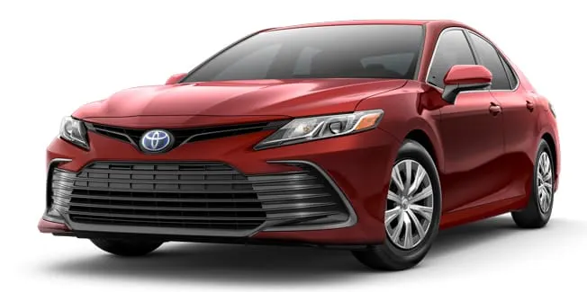

Los compradores de coches nuevos en 2024 tienen más de 260 modelos para elegir. Para ayudarte a encontrar el indicado para ti, todos los años Consumer Reports selecciona los 10 mejores autos (Top Picks), que se basan en el rendimiento de las pruebas de manejo en carretera, el pronóstico de confiabilidad, el nivel de satisfacción del propietario y la seguridad. (Todos los Top Picks tienen como característica estándar el sistema de frenado de emergencia automático, que funciona tanto a velocidades bajas con detección de peatones, como a velocidades altas en la autopista).

 



 `
`